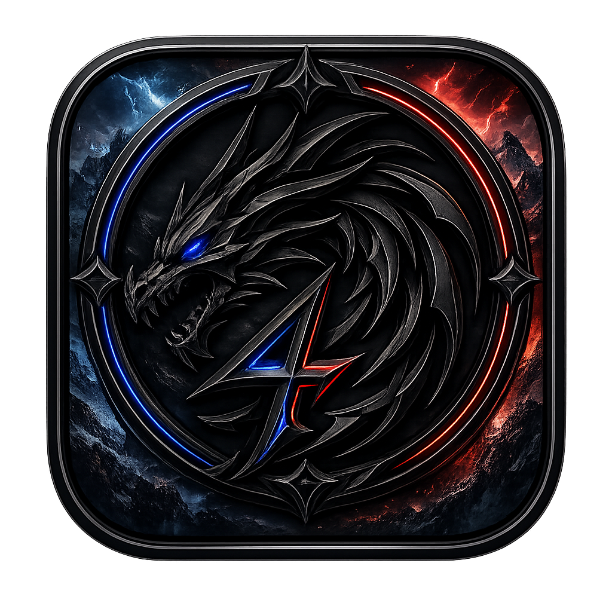

Submit a resume
A resume is required for every applicant. If you cannot create one, you are still welcome. We will help you prepare it without judgment.

FOUR DRAGONSTokyo, Japan · Main Headquarters & Decentralized Worldwide
An inclusive, character-first entertainment family where willingness, curiosity, passion, and human dignity come before every resume.
Christopher Lee Cajes — Founder, CEO & Chairman
Our Work
Any entertainment and creativity products — from the heart of every member of the family as creators.
Audience: All creations are designed exclusively for minors — children through teenagers. Content is delivered through television and television-connected platforms only. The use of personal gadgets, mobile devices, or handheld screens by minors is not permitted for Four Dragons content. Every creation is crafted to be age-appropriate, safe, and enriching for young audiences.
Product Standards
All Four Dragons products must uplift, inspire, and bring people together. The following themes are never permitted — across games, anime, film, music or books:
Instead, every project strives to be friendly, hopeful, and positive:
Hiring Process
Four Dragons welcomes anyone who is willing, interested, and excited to join the family. The process is simple, respectful, and built to meet people where they are.
A resume is required for every applicant. If you cannot create one, you are still welcome. We will help you prepare it without judgment.
The interview is 100% informal. Say hi and hello, tell your story politely and friendly, and be yourself. Skills, knowledge, achievements, education, life status, and background do not decide your worth.
No skills assessment, test, examination, assignment, or practical demonstration is required at any stage of hiring.
Not everything can be taught in schools or universities. Character, attitude, willingness, and humanity are lived and learned through life.
“We should have a heart. These people have passions and purpose in life, especially when building a true family and a real impact of creativity and innovation to the world.”
Hiring Standards
Hiring is an act of trust. We protect each person's dignity, passions, career, and future while looking for the character that helps a family grow together.
The founder's current policy does not appoint Filipino applicants as hiring managers, based on the founder's experiences with harmful hiring practices in the Philippines. Filipino applicants are welcome to join the family in every other role.
The following rejection scripts and email subjects represent inappropriate and unprofessional hiring communication. They are not part of Four Dragons hiring communication and show language the founder will not tolerate.
This script's true meaning is unprofessionalism. It is unreasonable to reduce a person to a narrow comparison of specialized experience.
The word “unfortunately” is not part of our hiring dictionary and will not be tolerated in hiring.
Corporate Constitution
Character outweighs skill. Skills can be learned. Character must be lived.
No bribery. No abuse of authority. No favoritism. No exploitation.
Profit sustains the mission — it does not replace it.
Teams and individuals may create. Original pitches are welcomed. Passion projects encouraged.
Relocate. Retrain. Create opportunities. The Founder protects his children's jobs, dreams, and futures — first, always.
Entrepreneurship is celebrated. Leaving to build your own venture is a success — not betrayal. Former members stay family.
Titles do not determine worth. Everyone deserves equal human respect.
“Walang sapilitan.”
Real teamwork comes from willingness — not coercion.
Everyone remains a student. Everyone remains a teacher.
Culture Book
The word "Micromanage" / "Micromanagement" doesn't exist — not in this dictionary, not here.
"We speak respectfully. We don't criticize people. We lift each other up."
“Four Dragons has zero tolerance for toxic work culture. If the environment stops feeling safe, the Founder will act — and protect his family.”
Creative Philosophy
The best work comes when creators are free to explore, iterate, and let ideas breathe — not when a calendar is breathing down their neck.
When people aren't stressed about arbitrary timelines, they take risks, experiment, and produce work they're proud of. Rushing creates mediocrity; patience creates masterpieces.
Leonardo kept refining the Mona Lisa for 16 years — from 1503 until his death in 1519 — never delivering it, because it wasn't finished.
One painting. Nearly two decades. No deadline over his head. The result: the most famous painting on Earth — not because he rushed, but because he refused to settle.
He didn't build something to meet a date. He built something to be extraordinary.
That's the energy Four Dragons was founded on. Our games, anime, films, music, and books deserve that same patience. We'd rather take our time and ship something people love than chase a calendar and ship something forgettable.